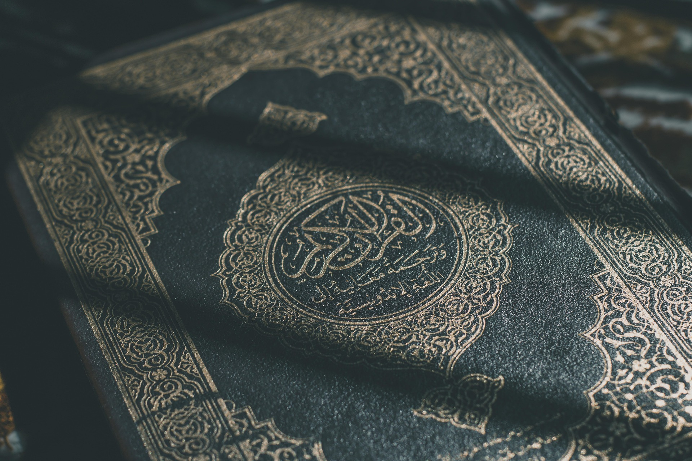
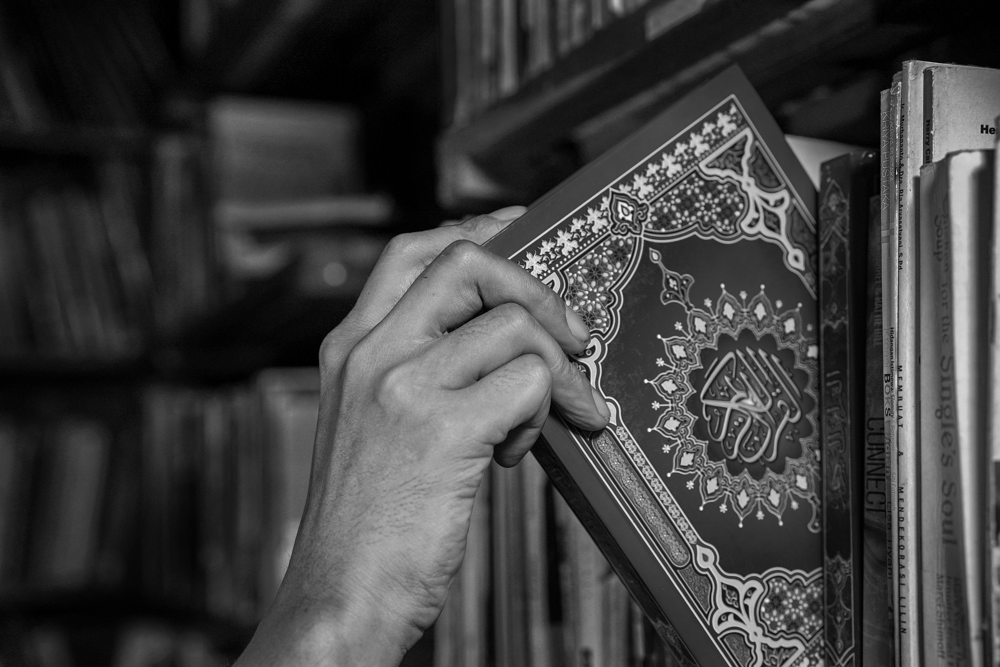
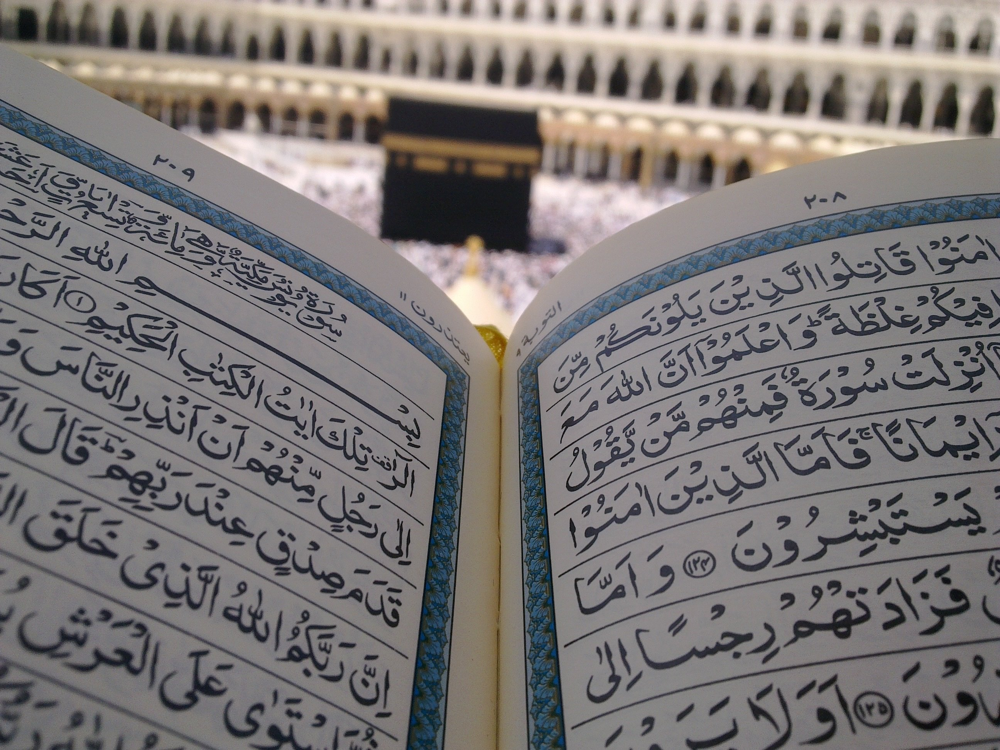
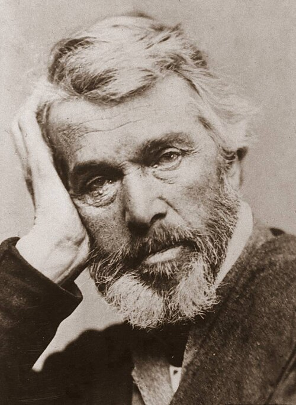

The Quran is the holy book of Islam, revealed by Allah (God) to prophet Muhammad (P.B.U.H) over 23 years. It is composed of 114 chapters called "Surahs" and is written in classical Arabic. Muslims arround the world consider it a divine guide for every aspect of life. The Quran emphsizes the oneness of Allah, compassion, justice, and morality.
The word "Quran" means "reitation", reflecting its original tradition. It has remained unchanged since its revelation in the 7th century.
The Quran contains 114 chapters, each known as a "Surah." Every Surah consists of verses called "Ayahs." Some are revealed in Mecca and others in Medina
The Quran was revealed gradually over 23 years starting in 610 CE. The first revelation was received in the Cave of Hira. The Angel jibreel(Gabriel) brought the verses to Prophet Muhammad(P.B.U.H).
During the Prophet's lifetime, the Quran was memorized and also written on parchment, bones, and leather. After his death, Caliph Abu Bakr and later Usman ibn Affan supervised its compilation into a single book.
Millions of Muslims memorize the entire Quran, ensuring its preservation. It remains unchanged since the 7th century.
The Quran is considered the peak of Arabic linguistic excellence.Its grammar, rhythm, and eloquence are unmatched.Even the greatest poets of pre-Islamic Arabic were unable to produce a verse like it.
The Quran challenges all of humanity: "If you are in doubt about what were revealed to Our servant, then produce a surah like it..."(Surah al-Baqarah 2:23).
Many non-Muslims scholars have admired the Quran's content, depth, and preservation.some view it as a historical and literary masterpiece.
For example, the French philosopher voltaire, the historian Edward Gibbon, and British scholar Thomas Carlyle all spoke respectfully about the Quran and Prophet Muhammad(P.B.U.H), Even if they did not convert to Islam.
